第 14 章 高分子結構
本章預覽
核心問題
金屬和陶瓷的性質主要由原子種類和晶體結構決定。高分子的性質則由分子鏈的化學結構、長度、形狀、分支、交聯、立體規整性和排列方式共同決定——變數遠比金屬和陶瓷多。同樣是碳氫化合物，為什麼 PE 可以是軟的保鮮膜（LDPE）也可以是堅硬的牛奶瓶（HDPE）？為什麼橡膠可以拉伸數倍後恢復原狀？為什麼有些塑膠加熱軟化可重塑（熱塑性），有些加熱後永遠固化（熱固性）？答案都在分子鏈的結構中。
10 條關鍵概念
- 高分子＝長鏈分子：單體（monomer）是重複單元；聚合反應將成千上萬個單體連結成高分子鏈
- 分子量是分布不是單一值：$M_n$（數量平均）、$M_w$（重量平均）。$M_w/M_n$＝多分散性指數（PDI）
- 聚合度（DP）：一條鏈上重複單元的數目。DP 從數百到數十萬——決定鏈的糾纏和力學性質
- 分子形狀：C-C 單鍵可旋轉 → 鏈在熔融態中呈無規線圈（random coil），末端距遠小於完全伸展長度
- 分子結構四型：線性（可緊密堆積→高結晶度）、分支（阻礙堆積→低密度）、交聯（彈性體）、網狀（熱固性）
- 立體規整性（tacticity）：等規（isotactic）→可結晶；對規（syndiotactic）→可結晶；無規（atactic）→非晶
- 熱塑性 vs 熱固性：二次鍵連結鏈（可逆軟化）vs 共價交聯（不可逆固化）
- 共聚物：無規、交替、嵌段、接枝——組合不同單體以調整性質（如 ABS、SBS）
- 高分子結晶：無法 100% 結晶。折疊鏈片晶（lamellae）→球晶（spherulite）→半結晶微觀結構
- $T_g$ 與 $T_m$：玻璃轉變溫度（非晶區軟化）和熔點（結晶區熔融）——決定使用溫度範圍
本章邏輯鏈
碳氫化合物化學基礎 → 單體與高分子 → 分子量與分布 → 分子形狀（鏈柔順性）→ 分子結構（線性/分支/交聯/網狀）→ 立體組態（tacticity）→ 熱塑性/熱固性分類 → 共聚物 → 高分子結晶（片晶→球晶）→ $T_g$ 與 $T_m$ → 結構–性質對應關係
先備知識橋接
- Ch2：共價鍵與 $sp^3$ 混成——碳–碳單鍵的四面體幾何是高分子鏈骨架的基礎；凡得瓦力與氫鍵——理解高分子鏈之間的二次鍵
- Ch2：%IC 公式——C-H 鍵的 %IC ≈ 4%（幾乎純共價），解釋了高分子鏈的高穩定性和電絕緣性
- Ch4：缺陷概念——高分子的「缺陷」包括鏈端、分支點、不規則頭尾排列，與金屬/陶瓷的點缺陷完全不同
- Ch13： $T_g$ 的概念（從玻璃章）——本章會在高分子語境下重新討論，因為 $T_g$ 對高分子比對無機玻璃更關鍵
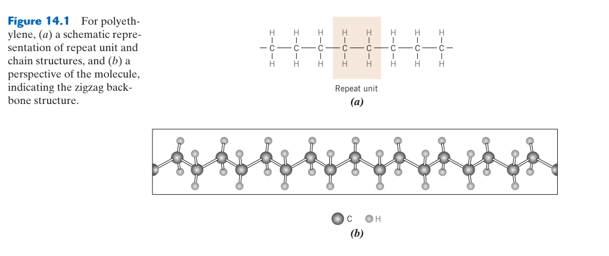
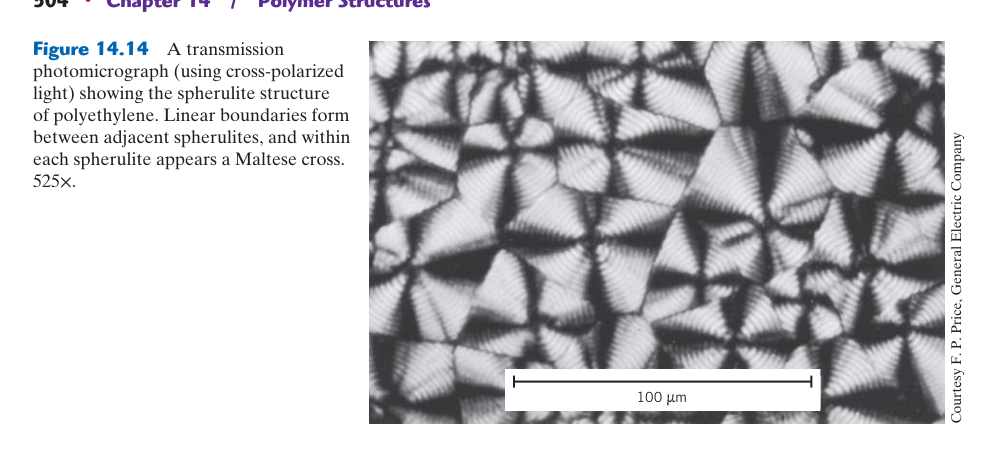
14.1 高分子化學基礎
重複單元不等於原始單體：加成聚合通常不產生小分子副產物，縮合聚合則常伴隨水或醇等離去。鏈成長與步成長的分子量建立方式不同，官能基比例的微小失衡也會限制步成長聚合。
14.2 分子量與分子量分布
$M_n$ 與 $M_w$ 權重不同：數均分子量對鏈條數敏感，重均分子量更強調高分子量鏈，通常 $M_w\ge M_n$；分散度 $Đ=M_w/M_n$ 描述分布寬度。加工與力學性質可能對分布不同部分敏感。
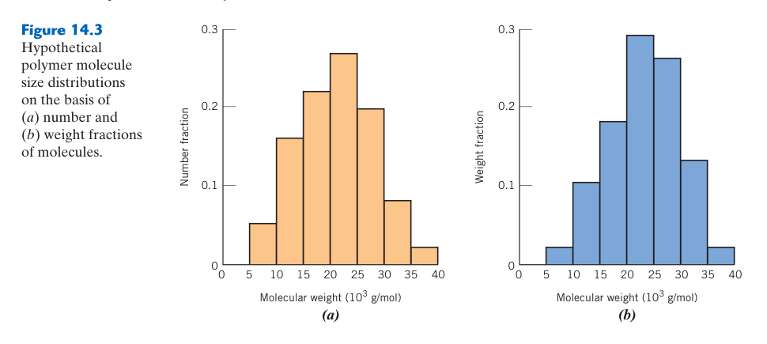
14.3 分子形狀與結構
鏈柔順性來自主鏈旋轉：單鍵可在不斷鍵下改變構形，但大側基、芳香環、雙鍵與極性作用會提高旋轉能障。構形是瞬時形狀，不應與必須斷鍵才能改變的組態混淆。
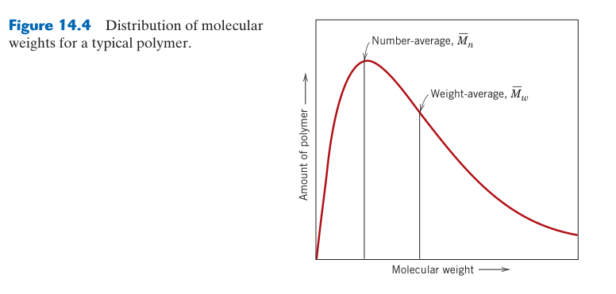
14.4 組態與立體異構
規整性影響可結晶能力：等規與間規鏈較能週期排列，無規鏈通常較難結晶；但結晶度仍受支化、共聚、冷卻速度與分子量控制。立體規整只是降低排列障礙，不直接保證高結晶度。
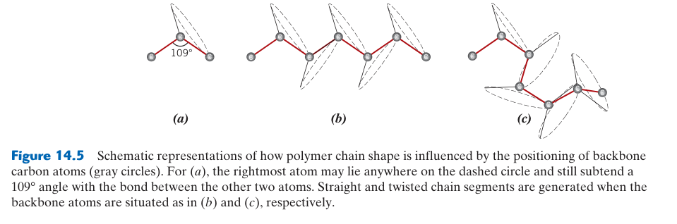
14.5 共聚物
序列分布決定功能：隨機共聚可調整 $T_g$ 並破壞規整性，嵌段與接枝共聚則可能形成奈米尺度微相分離。互不相容鏈段被共價鍵連接後，可自組裝成兼具硬區與軟區的結構。
烴分子——高分子的化學基礎
大多數高分子是有機化合物，以碳為骨架。碳的獨特之處在於它能形成四個 $sp^3$ 共價鍵（四面體幾何，鍵角 ~109.5°），使碳原子可以彼此連結形成長鏈、分支和環狀結構——這是高分子多樣性的化學根源。最簡單的烴是甲烷（CH₄，天然氣），其次是乙烷（C₂H₆）、丙烷（C₃H₈）...隨著碳鏈增長，物理性質從氣體（C₁–C₄）變為液體（C₅–C₁₇）再變為固體（C₁₈+，石蠟）。
高分子的單體通常含有雙鍵（C=C）或官能基，使它們能夠進行聚合反應。最重要的單體包括：乙烯（CH₂=CH₂ → 聚乙烯 PE，全世界產量最大的塑膠，年產量 >1 億噸）、苯乙烯（C₆H₅CH=CH₂ → 聚苯乙烯 PS，硬而脆，用於免洗餐具和包裝）、氯乙烯（CH₂=CHCl → 聚氯乙烯 PVC，添加塑化劑可軟化為人造皮革、血袋）、四氟乙烯（CF₂=CF₂ → PTFE/Teflon®，極低的摩擦係數和優異的化學惰性——幾乎不與任何化學物質反應）、丙烯（CH₂=CHCH₃ → 聚丙烯 PP，比 PE 更剛、更耐熱——微波爐餐盒、汽車保險桿）、甲基丙烯酸甲酯（MMA → PMMA/Plexiglas®，透明如玻璃但更輕、更耐衝擊——飛機窗戶、隱形眼鏡）。
聚合反應分為兩大類：（1）加成聚合（addition polymerization）——雙鍵打開，單體一個接一個加成到成長中的鏈端。乙烯的自由基聚合為例：引發劑（如過氧化物 R-O-O-R）分解產生自由基 R·→ 攻擊乙烯雙鍵 → 形成新的自由基 → 持續加成更多乙烯分子 → 最終兩個自由基相遇而終止（結合或歧化）。（2）縮合聚合（condensation polymerization）——兩個單體反應時釋放小分子（通常是水或甲醇），例如尼龍 6,6 由己二胺（hexamethylene diamine）和己二酸（adipic acid）縮合，每個連結釋放一個水分子。縮合聚合通常比加成聚合慢，且需要移除副產物以推動反應完成（Le Chatelier 原理）。
單體的化學結構決定了高分子鏈的剛性、極性、和分子間作用力。剛性鏈（如 PS 中的大型苯環側基→位阻效應使鏈難以旋轉）→高 $T_g$；柔性鏈（如 PE 中的 -CH₂-CH₂- 簡單重複，C-C 鍵可自由旋轉）→低 $T_g$。極性鏈（如 PVC 中的 C-Cl 偶極→鏈間偶極–偶極力增強）→較高的強度和介電常數；非極性鏈（如 PTFE 中對稱的 C-F 排列抵消偶極）→極低的表面能和摩擦係數。理解單體→鏈性質→材料性質的鏈條是高分子設計的核心。
分子量——高分子最重要的參數
高分子不像小分子（水、乙醇、苯）有確定的單一分子量。聚合反應產生的是不同鏈長的混合物——有些鏈較長（更多單體加入），有些較短（較早終止）。因此高分子的分子量必須用平均值和分布來描述。這是高分子科學與金屬/陶瓷最根本的差異之一。
數量平均分子量 $M_n$：將所有鏈的分子量加總後除以鏈的總數——$M_n = \\frac{\\sum N_i M_i}{\\sum N_i}$，其中 $N_i$ 是分子量為 $M_i$ 的鏈數。$M_n$ 反映的是「一條平均鏈」的分子量，對小分子（短鏈）的數目敏感——少量短鏈會顯著降低 $M_n$。它決定依數性質（colligative properties）——滲透壓、沸點上升、凝固點下降，因為這些性質取決於溶質的分子數目而非大小。
重量平均分子量 $M_w$：以每條鏈的重量（而非數量）作為加權——$M_w = \\frac{\\sum w_i M_i}{\\sum w_i} = \\frac{\\sum N_i M_i^2}{\\sum N_i M_i}$。因為大分子比小分子重得多，$M_w$ 對大分子（長鏈）的存在更敏感。少量極長的鏈對 $M_w$ 有不成比例的貢獻，但幾乎不影響 $M_n$。$M_w$ 與力學性質（強度、韌性、熔體黏度）的相關性比 $M_n$ 更強——因為大分子提供更多的鏈糾纏和 intermolecular 作用。
多分散性指數（PDI = $M_w/M_n$）衡量分子量分布的寬窄。$M_w \\geq M_n$，因此 PDI ≥ 1。PDI = 1 表示所有鏈長完全相同（理論上，僅在特定活性聚合如陰離子聚合中可接近）。典型商業高分子的 PDI：自由基聚合的 PS 或 PMMA 約 1.5–3（終止反應的隨機性使分布較寬）；metallocene 催化 PE 約 1.1–1.5（單一活性位點催化→窄分布）；縮合聚合的尼龍約 2（逐步增長的統計特性）。寬分布（高 PDI）的優勢：低分子量部分作為內在塑化劑——改善熔體流動性和加工性；高分子量部分提供強度和韌性。窄分布的優勢：性質均勻、可預測。
聚合度（DP, degree of polymerization）是每條鏈上的重複單元數：DP = $M_n / m$，其中 $m$ 是重複單元的分子量。例如 PE 的重複單元 -CH₂-CH₂- 分子量為 28 g/mol；若 $M_n$ = 280,000 g/mol，則 DP = 10,000——這條鏈上有約一萬個乙烯單元連結在一起。典型 DP 範圍：PE 可達 50,000–100,000（超高分子量 PE/UHMWPE 用於人工關節，DP > 150,000）；工程塑膠（PC、PA）約 100–500（較低的 DP 以利於射出成形）；纖維（PET、尼龍）約 200–600。一般規則：DP < ~100 時鏈太短，無法有效糾纏→材料強度很低（脆性蠟狀）；DP > ~600 時力學性質趨於穩定，再增加 DP 的邊際效益降低（但耐磨性和熔體強度持續改善）。
📝 範例 14.1：計算分子量平均值與 PDI
題目：某高分子樣品含以下四個分率——
| 分子量 (g/mol) | 鏈數 $N_i$ |
|---|---|
| 10,000 | 100 |
| 50,000 | 60 |
| 100,000 | 30 |
| 500,000 | 10 |
計算 $M_n$、$M_w$ 和 PDI。
解：
$\\sum N_i = 100 + 60 + 30 + 10 = 200$
$\\sum N_i M_i = 100(10,000) + 60(50,000) + 30(100,000) + 10(500,000) = 1,000,000 + 3,000,000 + 3,000,000 + 5,000,000 = 12,000,000$
$M_n = 12,000,000 / 200 = 60,000$ g/mol
$\\sum N_i M_i^2 = 100(10,000)² + 60(50,000)² + 30(100,000)² + 10(500,000)² = 10^{10} + 1.5 \\times 10^{11} + 3 \\times 10^{11} + 2.5 \\times 10^{12} = 2.96 \\times 10^{12}$
$M_w = 2.96 \\times 10^{12} / 12,000,000 = 246,667$ g/mol
PDI = $M_w / M_n = 246,667 / 60,000 = 4.11$
關鍵洞察：$M_w$ (246,667) 遠大於 $M_n$ (60,000)，因為僅 5% 的鏈（10/200）具有 500,000 的分子量，但它們佔據了總重量的 ~42%。這就是重量平均對大分子敏感的數學體現。
初學者容易把 $M_n$ 和 $M_w$ 視為同一個性質的不同「精確度」。實際上它們測量的是不同的物理量：$M_n$ 反映的是「鏈的數量」（與滲透壓等依數性質相關），$M_w$ 反映的是「鏈的質量分布」（與力學性質相關）。一個含少量極長鏈的樣品可能有相同的 $M_n$ 但顯著更高的 $M_w$ 和 PDI——從而具有完全不同的熔體黏度和機械性質，即使「平均分子量」看起來一樣。
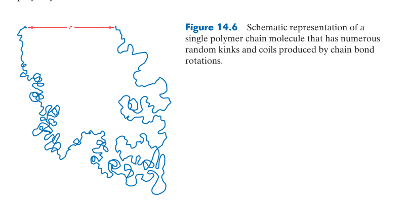
14.6 結晶度與球晶結構
高分子通常是半結晶：鏈折疊片晶由非晶區及 tie molecules 連接並組成球晶。提高結晶度通常增加密度、模數與阻隔性，卻可能降低透明與衝擊韌性；冷卻速率也控制球晶尺度。
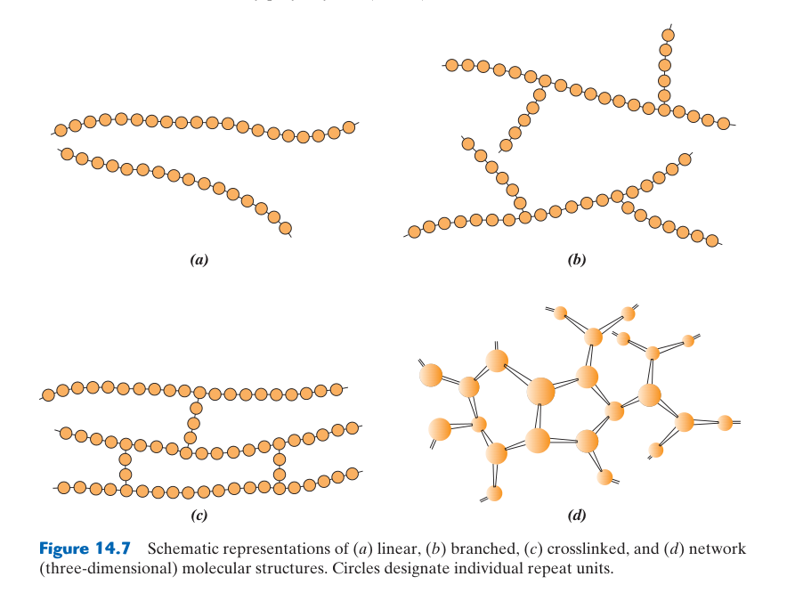
14.7 高分子晶體的結構模型
片晶不是完整伸直鏈：長鏈在有限厚度內反覆折返，部分鏈段成為晶區，其餘形成迴圈、尾端與跨晶區連接。折疊表面和缺陷降低片晶熔點，退火可使片晶增厚並提升熔融溫度。
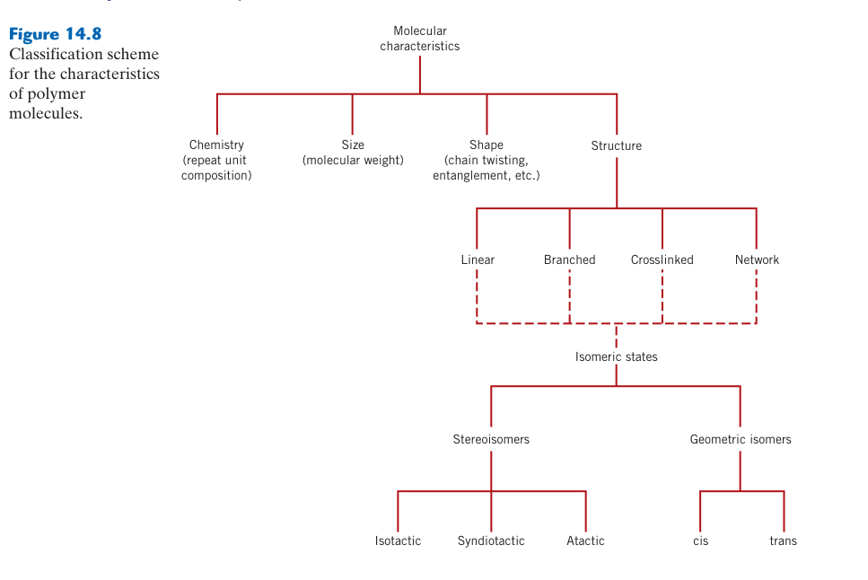
14.8 玻璃轉變溫度 $T_g$——高分子的「熔點」
$T_g$ 不是熔點：它是非晶鏈段協同運動開始加快的動力學轉變，會隨測試速率與頻率移動。半結晶高分子可同時具有非晶區的 $T_g$ 與晶區的 $T_m$。
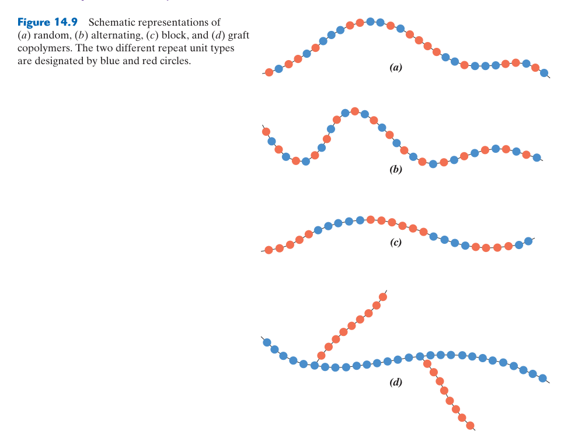
14.9 影響 $T_g$ 和 $T_m$ 的因素
限制鏈運動會提高 $T_g$：剛性主鏈、大側基、氫鍵與交聯通常提高 $T_g$；增塑劑增加自由體積而降低它。$T_m$ 更依賴晶格規整與分子間作用，支化與隨機共聚常降低結晶能力。
14.10 熱塑性 vs 熱固性高分子
差別在永久網絡：熱塑性鏈靠次級鍵與纏結連接，加熱可流動；熱固性固化後形成共價三維網絡，只會軟化或分解。交聯提高耐熱與耐溶劑，卻通常降低斷裂伸長與再加工性。
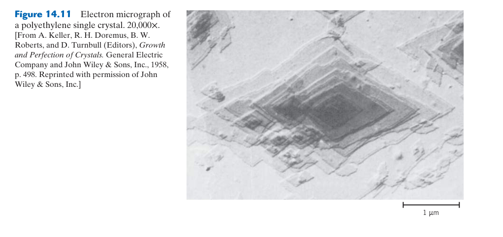
14.11 彈性體（Elastomers）
橡膠彈性主要是熵效應：拉伸使隨機捲曲鏈取向、構形熵下降，卸載後熱運動驅使其恢復。少量交聯防止鏈永久滑走；交聯太少會潛變，太多則變硬脆。
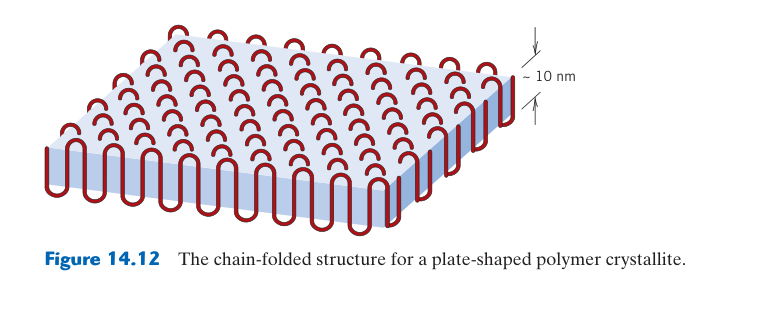
14.12 高分子的添加劑
添加劑會遷移與老化：增塑、抗氧化、UV 穩定、阻燃與填料能調整性質，但小分子可能析出、揮發或被萃取。配方需評估相容性、毒理、長期擴散與回收影響。
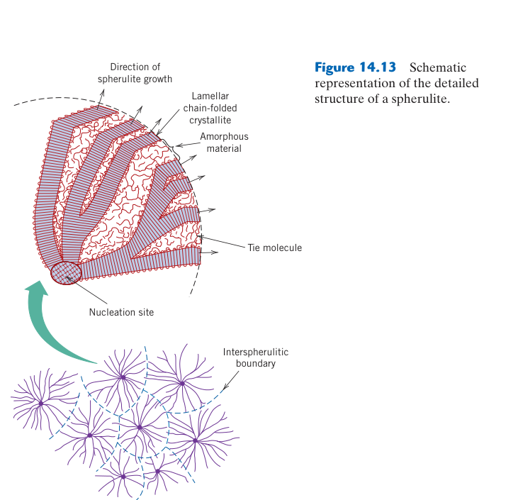
14.13 高分子材料的選擇指南
先以使用溫度相對 $T_g/T_m$ 定位：再檢查載荷時間、濕度、化學品、UV 與尺寸公差。短時間拉伸強度不能代表多年蠕變能力；加工方式與壁厚也會改變取向、結晶和殘留應力。
分子形狀——鏈的柔順性
高分子鏈不是剛性的直棒。碳–碳單鍵（$\\sigma$ 鍵）可以繞鍵軸自由旋轉——雖然鍵角固定（$sp^3$ 為 ~109.5°），但每個鍵的旋轉使鏈可以彎曲、折疊和扭轉成無數種構形（conformation）。在熔融態或溶液中，熱能（$k_B T$）驅動鍵的持續旋轉，鏈採取無規線圈（random coil）構形——這是一種統計上的最可能狀態。末端距（end-to-end distance）$r$ 遠小於完全伸展的鏈長（contour length）$L$。對於自由旋轉鏈模型：$\\langle r^2 \\rangle^{1/2} = \\ell \\sqrt{N}$（$\\ell$ 為每個鍵的長度，$N$ 為鍵數），而完全伸展長度為 $L = \\ell N \\cos(\\theta/2)$。兩者比值約為 $1/\\sqrt{N}$——對於一條 DP=10,000 的 PE 鏈，無規線圈的末端距僅約伸展長度的 1%。
鏈的柔順性（flexibility）取決於化學結構：簡單骨架（PE 的 -CH₂-CH₂-，無大型側基）→ 極柔順；大型側基（PS 的苯環）→ 位阻效應限制旋轉 → 鏈變剛；共軛雙鍵（聚乙炔中的交替單/雙鍵，$\\pi$ 電子非局域化使雙鍵無法旋轉）→ 剛性棒狀鏈 → 導電高分子；環狀結構在骨架中（聚碳酸酯 PC 中的雙酚 A 環）→ 增加剛性 → 高 $T_g$。鏈的柔順性直接決定 $T_g$：柔性鏈在低溫仍可局部運動 → 低 $T_g$（PE：~−120°C）；剛性鏈需要更高溫度才能運動 → 高 $T_g$（PC：~147°C）。
分子結構——四種拓撲型態
高分子鏈可以有不同的連接方式，產生四種截然不同的材料行為：
線性高分子（linear polymer）：重複單元從頭到尾連成一條直鏈，無分支。如 HDPE（高密度聚乙烯）——線性鏈可緊密堆積 → 高結晶度（~70–90%）→ 高密度（~0.96 g/cm³）、高剛性、較不透明。金屬茂催化（metallocene catalysis）可製造幾乎完美線性的 PE，無任何長鏈分支。
分支高分子（branched polymer）：主鏈上有側鏈（分支）連接。如 LDPE（低密度聚乙烯）——在高壓自由基聚合過程中，鏈轉移反應產生長鏈和短鏈分支。分支阻礙鏈的緊密堆積 → 結晶度降低（~40–60%）→ 密度降低（~0.92 g/cm³）、更柔軟、更透明。分支的類型和密度是調控 PE 性質的關鍵參數——從超軟的 LLDPE（線性低密度，僅短分支）到較硬的 MDPE（中密度）。
交聯高分子（crosslinked polymer）：相鄰的線性鏈之間以共價鍵橋接。最重要的例子是硫化橡膠（vulcanized rubber）——天然橡膠（聚異戊二烯，cis-1,4-polyisoprene）與硫（~1–5%）加熱，硫原子在鏈之間形成 -S-S- 交聯橋。硫化前的生膠是黏性的熱塑性材料（鏈之間僅有凡得瓦力，可滑動）；硫化後，交聯點防止鏈滑動 → 彈性體行為——拉伸數倍後可恢復原狀（交聯點作為「記憶點」限制永久變形）。交聯密度（每單位體積的交聯點數）決定彈性模數：愈多交聯 → 愈剛（從軟橡膠 → 硬橡膠 → 硬質橡膠 ebonite）。但過度交聯使材料變脆——因為鏈無法在受力時重新排列以耗散能量。
網狀高分子（network polymer）：高度交聯的三維網絡——每個單體有三個或以上的反應位點，形成巨大的單一「分子」。環氧樹脂（epoxy）、酚醛樹脂（phenol-formaldehyde/Bakelite）、不飽和聚酯是典型例子。一旦固化，網狀高分子不熔不溶——加熱只會分解（碳化）而不軟化，因為要讓材料流動必須打斷共價鍵（而非像熱塑性只需克服二次鍵）。這就是熱固性的本質。優點：優異的耐熱性和尺寸穩定性；缺點：不可回收、不可重塑。
硫化是高分子工程中最優雅的化學控制之一。未硫化的橡膠在熱天會變黏、冷天會變脆——實用性極低。Charles Goodyear 在 1839 年意外發現硫磺與橡膠加熱後產生了穩定的彈性材料，徹底改變了材料世界。現代輪胎使用的硫化系統極其複雜：除硫磺外還包含促進劑（加速交聯反應）、活化劑（ZnO + 硬脂酸，形成 Zn-硬脂酸鹽複合物以提高交聯效率）、抗氧化劑、碳黑補強填料（Carbon black，增加耐磨性和強度——輪胎黑色的原因）。一個現代輪胎的橡膠配方可能包含 15 種以上的化學添加劑。
立體組態（Configuration）——空間排列的永久性
當重複單元含有不對稱碳（四個不同的取代基）或側基時，側基沿鏈的空間排列產生不同的組態（configuration）。組態與構形（conformation）的關鍵區別：組態由化學鍵固定，必須打斷共價鍵才能改變；構形可透過鍵的旋轉改變。三種主要組態：
等規（isotactic）：所有側基（如 PP 的 -CH₃）在鏈的同一側。Ziegler-Natta 催化劑（TiCl₄ + Al(C₂H₅)₃，1963 年 Nobel 獎）可精密控制立體化學，產生等規 PP。等規鏈高度規則 → 可緊密堆積 → 可結晶 → 高密度、高剛性、高熔點（等規 PP 的 $T_m$ ~176°C）——這就是商業 PP（微波爐餐盒、汽車零件）。
對規（syndiotactic）：側基交替排列在鏈的兩側。需要特殊的金屬茂催化劑（metallocene，如 Cp₂ZrCl₂ + MAO）才能產生。對規 PP 的結晶結構不同於等規 PP，性質也略有差異。對規 PS（s-PS）可結晶而一般 PS（無規）不能——s-PS 具有更高的耐熱性和耐化學性，但因成本高僅用於特殊場合。
無規（atactic）：側基隨機分布。自由基聚合通常產生無規高分子，因為鏈端的自由基平面性使單體可以從任一側加成。無規鏈的隨機立體化學 → 無法規則堆積 → 非晶（永不結晶）→ 軟、透明、低強度。無規 PP（a-PP）是等規 PP 生產中的副產物——蠟狀、低分子量、無商業價值（用於熱熔膠等低階用途）。
📝 自編概念例：等規 vs 無規——同一化學式，天壤之別的性質
比較對象：等規聚丙烯（i-PP）vs 無規聚丙烯（a-PP），分子式皆為 (-CH₂-CHCH₃-)ₙ
| 性質 | 等規 PP (i-PP) | 無規 PP (a-PP) |
|---|---|---|
| 結晶度 | 50–70% | 0%（非晶） |
| $T_m$ | ~176°C | 無（非晶，無熔點） |
| $T_g$ | ~−10°C | ~−20°C |
| 密度 | ~0.90 g/cm³ | ~0.85 g/cm³ |
| 拉伸強度 | ~35 MPa | ~1 MPa |
| 外觀 | 半透明至不透明 | 透明蠟狀 |
| 用途 | 食品容器、汽車零件、纖維 | 熱熔膠、瀝青改性劑 |
教訓：「聚丙烯」不是一種材料——同樣的化學式，立體化學的差異使性質相差 35 倍（強度）。高分子材料的設計必須從分子層級開始。
熱塑性 vs 熱固性——本質區別
這個區分是所有高分子材料分類的基礎。熱塑性高分子（thermoplastics）的鏈之間僅靠二次鍵（凡得瓦力、氫鍵、偶極力）連結——無共價交聯。加熱至 $T_g$（非晶區）或 $T_m$（結晶區）以上時，二次鍵的熱能足以克服分子間吸引力 → 鏈可彼此滑動 → 材料軟化流動。冷卻後二次鍵重新形成 → 硬化。這個過程可無限重複（理論上，實際上每次加熱可能有些微降解），因此熱塑性高分子可以回收再加熱重塑。
熱固性高分子（thermosets）在固化過程中形成共價交聯的 3D 網絡。一旦交聯完成，鏈之間以共價鍵（鍵能 200–400 kJ/mol）連結——加熱提供的熱能（$k_B T$ 在 500K 約 ~4 kJ/mol）不足以打斷共價鍵，因此材料不會軟化流動。再加熱只會提供足夠能量打斷較弱的鍵（如 C-O、C-N）導致熱分解（碳化）。熱固性不可回收——這是環境方面的缺點，但高耐熱性使其在特定應用中無法取代（如印刷電路板 FR-4 的環氧樹脂基材）。
「塑膠」是台灣口語中對所有高分子材料的泛稱，但包含熱塑性和熱固性兩大類。日常食品容器（PE、PP、PET）是熱塑性（可回收）。但：電源插頭/開關外殼（酚醛樹脂/Bakelite——深棕色、稍有酚味）、鍋子把手（酚醛樹脂）、電路板基材（環氧樹脂）、汽車車身填充劑（不飽和聚酯＋玻纖——俗稱「玻璃纖維」/FRP）都是熱固性——加熱不會融化，只會燒焦。辨別法：用燒熱的針刺——熱塑性會熔融（針刺入），熱固性不會（針只能刺入表面或完全不熔）。
高分子結晶——不可能 100%
高分子永遠無法達到 100% 結晶度，原因在於長鏈的拓撲限制：一條分子鏈長度可達數微米（完全伸展），而晶體的厚度僅 ~10–20 nm。鏈必須來回折疊（chain folding）才能從熔融態的無規線圈排列進入結晶——但糾纏（entanglement）和鏈端（chain ends，無法完美併入晶格）必然留下非晶區域。即使在最理想條件下結晶（如從稀溶液中極慢結晶），結晶度也很少超過 95%。
半結晶高分子的微觀結構分層次構建：折疊鏈片晶（chain-folded lamella）是基本單元——~10–20 nm 厚（折疊週期）、橫向 ~μm 級。片晶從中心向外輻射生長，在徑向和切向交替堆疊，形成球晶（spherulite，直徑 ~10–100 μm，偏光顯微鏡下呈 Maltese cross 圖案）。球晶之間是非晶區域——包含未結晶的鏈段、鏈端、糾纏、和雜質。球晶邊界是弱區域（應力集中點），球晶愈大 → 邊界處的應力集中愈強 → 材料愈脆。快速冷卻（如射出成形中模具壁的急冷 skin layer）產生細小球晶 → 較韌；緩慢冷卻產生粗大球晶 → 較脆。
結晶度由分子結構決定：線性鏈（HDPE）→ 高結晶度（70–90%）；分支鏈（LDPE）→ 低結晶度（40–60%）；等規鏈（i-PP）→ 中等結晶度（50–70%）；無規鏈（a-PP、a-PS）→ 0%。結晶度對性質的影響是全方位的：密度↑、剛性↑（結晶區彈性模數可以是非晶區的 10–100 倍）、強度↑、滲透性↓（結晶區幾乎不透過氣體和液體——這就是為什麼 HDPE 牛奶瓶比 LDPE 袋更防潮）、光學透明度↓（結晶區和非晶區折射率不同，晶界散射光線 → 不透明/半透明。快速冷卻產生極小球晶或抑製結晶 → 透明——如 PET 飲料瓶由急冷非晶 PET 製成）。
$T_g$ 與 $T_m$——兩個轉變溫度
玻璃轉變溫度 $T_g$ 是非晶區（或半結晶高分子的非晶部分）從硬而脆的玻璃態轉變為柔軟的橡膠態的溫度。在 $T_g$ 以下，鏈段（約 10–50 個骨架原子）的局部運動被凍結——只有原子的振動，沒有協同的鏈段運動 → 材料表現為剛性玻璃。在 $T_g$ 以上，鏈段獲得足夠熱能以進行協同運動 → 鏈可以局部重新排列 → 材料變得柔軟。 $T_g$ 不是一階相變（沒有潛熱，不像 $T_m$ 那樣有明確的體積/焓的突變）——它是一個動力學轉變，轉變溫度取決於冷卻速率（快速冷卻→測得較高的 $T_g$）。
熔點 $T_m$ 是結晶區轉變為非晶熔融態的溫度——這是一階相變，有潛熱。只有可結晶的高分子才有 $T_m$。$T_m$ 取決於結晶的完整性和片晶厚度——較厚的片晶（較高結晶溫度下形成）具有較高的 $T_m$。$T_m$ 總是高於 $T_g$——通常 $T_m / T_g \\approx 1.4$–2.0（經驗規則）。實際使用時：非晶高分子（PS、PMMA、PC）的使用上限是 $T_g$（超過會軟化變形）；半結晶高分子（PE、PP、尼龍）的使用上限在 $T_g$ 和 $T_m$ 之間——結晶區提供剛性直到 $T_m$，但非晶區在 $T_g$ 以上變軟 → 整體性質是兩相的加權平均。
$T_g$ 反映的是鏈段開始能進行協同運動的溫度。影響 $T_g$ 的分子因素：（1）鏈的剛性——剛性骨架（大型側基、環狀結構）→ 旋轉位阻大 → $T_g$ 高（PC: 147°C, PS: 100°C）vs 柔性骨架（PE: −120°C）。（2）分子間作用力——強極性基團（PVC 中的 C-Cl 偶極）→ 鏈間吸引力大 → 需要更高溫度才能運動 → $T_g$ 高（PVC: ~80°C）vs 非極性 PE（−120°C）。（3）側基大小——大型側基增加旋轉位阻但同時也增加自由體積（將鏈推開）→ 兩種效應互相競爭。PP（-CH₃側基， $T_g$ ~−10°C）比 PE（無側基， $T_g$ ~−120°C）的 $T_g$ 高，因為 -CH₃ 限制了鍵的旋轉（位阻效應 > 自由體積效應）。（4）交聯——交聯限制鏈運動 → $T_g$ 上升，高度交聯時 $T_g$ 可能消失（材料在分解前不軟化）。
本章摘要
關鍵概念對照表
| 主題 | 核心要點 | 關鍵參數 |
|---|---|---|
| 高分子化學 | 碳骨架+共價鍵。加成聚合（打開雙鍵）vs 縮合聚合（釋放小分子） | 單體類型決定鏈性質 |
| $M_n$ | 數量平均：$\\sum N_i M_i / \\sum N_i$。對小分子數目敏感。決定依數性質 | 滲透壓、沸點上升 |
| $M_w$ | 重量平均：$\\sum N_i M_i^2 / \\sum N_i M_i$。對大分子敏感。與力學性質更相關 | $M_w \\geq M_n$ |
| PDI | $M_w/M_n$。衡量分布寬窄。自由基聚合 ~1.5–3；metallocene ~1.1–1.5 | 窄分布→均勻，寬分布→易加工 |
| DP | 聚合度 = $M_n/m$。典型：PE 數千到數十萬；工程塑膠數百 | DP <100：脆性蠟狀 |
| 分子形狀 | 無規線圈。$\\langle r^2 \\rangle^{1/2} = \\ell \\sqrt{N}$。末端距遠小於伸展長度 | 鏈柔順性決定 $T_g$ |
| 分子結構 | 線性→HDPE（高結晶度）；分支→LDPE（低密度）；交聯→彈性體；網狀→熱固性 | 鏈拓撲決定加工性 |
| 立體組態 | 等規→可結晶；無規→非晶。Ziegler-Natta 催化控制 tacticity | i-PP $T_m$ ~176°C；a-PP 蠟狀 |
| 熱塑性 | 僅二次鍵連結鏈。加熱軟化可重塑。佔 ~80% 塑膠用量 | 可回收 |
| 熱固性 | 共價交聯 3D 網絡。加熱不熔（分解）。高耐熱、不可回收 | 環氧、酚醛、不飽和聚酯 |
| 結晶度 | 折疊鏈片晶→球晶。最多 ~95%。線性鏈高、分支鏈低、無規鏈 0% | 影響密度、剛性、滲透、透明 |
| $T_g$ | 非晶區玻璃態→橡膠態。動力學轉變（非一階）。使用溫度上限（非晶高分子） | PE: −120°C, PS: 100°C, PC: 147°C |
| $T_m$ | 結晶區熔融。一階相變。只有可結晶高分子有。$T_m/T_g \\approx 1.4$–2.0 | i-PP: 176°C |
初學者常見錯誤
$M_n$ 和 $M_w$ 測量不同的物理量。$M_n$ 反映鏈的數目（與滲透壓等依數性質相關），$M_w$ 反映質量分布（與力學性質相關）。兩個樣品可以有相同的 $M_n$ 但完全不同的 $M_w$——和完全不同的機械性質。在材料規格中必須明確指出使用的是哪一種平均。
構形可以透過鍵的旋轉改變（如無規線圈 → 伸展鏈是同一條鏈的不同構形）；組態由化學鍵固定，必須打斷共價鍵才能改變。等規 PP 和無規 PP 是不同的組態——不能用加熱或拉伸將無規 PP 變為等規 PP（需要重新聚合）。
高結晶度確實提高剛性和強度，但也使材料變脆、不透明、耐化學品但難以接合和印刷。最佳結晶度取決於應用：HDPE 牛奶瓶需要高結晶度（防滲透）；PET 飲料瓶需要低結晶度（透明）；PP 薄膜需要中等結晶度（透明但仍有足夠強度）。材料選擇永遠是取捨。
半結晶高分子（PE、PP、尼龍）有兩種轉變溫度，但初學者常只關注 $T_m$。實際上 $T_g$ 對室溫性質至關重要：PE 的 $T_g$（−120°C）遠低於室溫 → 非晶區在室溫是橡膠態 → PE 即使結晶度高仍能保持韌性；尼龍 6,6 的 $T_g$（~50°C）略高於室溫 → 非晶區在室溫是玻璃態 → 尼龍比 PE 更剛但低溫時變脆。這就是為什麼冰箱中的塑膠盒（PP）比常溫下更容易破裂。
概念診斷題
- 兩個 PE 樣品具有完全相同的 $M_n = 50,000$，但樣品 A 的 PDI = 1.2，樣品 B 的 PDI = 8.0。哪個樣品更容易射出成形？哪個樣品的拉伸強度可能更高？為什麼？提示：低分子量部分改善流動性，高分子量部分提供強度。
- 為什麼 HDPE 牛奶瓶是半透明/不透明的，而 LDPE 夾鏈袋是透明的？提示：結晶度對光散射的影響。
- 一條 DP=5,000 的 PE 鏈，無規線圈的末端距約為完全伸展長度的多少？如果是 DP=50 的短鏈呢？這對黏度有什麼影響？提示：$r \\propto \\sqrt{N}$ vs $L \\propto N$。
- 為什麼 PTFE（Teflon®）的摩擦係數極低（~0.05–0.08，接近冰在冰上），而 PVC 卻有較高的摩擦係數？提示：分子間作用力（偶極）vs 分子結構對稱性。
- 一個非晶高分子在室溫（25°C）使用。它的 $T_g$ 為 80°C。這是合適的應用嗎？如果 $T_g$ 為 −20°C 呢？提示： $T_g$ 以下是玻璃態（硬而脆）， $T_g$ 以上是橡膠態（軟而韌）。
延伸資源
- Sperling, L.H., Introduction to Physical Polymer Science — 高分子物理的經典入門，對分子量、結晶、 $T_g$ 有優異的闡述
- Hiemenz, P.C. & Lodge, T.P., Polymer Chemistry — 從化學角度深入聚合反應機制和分子量分布
- YouTube: "Polymers: Crash Course Chemistry #45" — 適合初學者的高分子化學總覽
- Odian, G., Principles of Polymerization — 聚合反應機制的權威參考，從自由基到活性聚合的完整處理
- 下一章：Ch15 高分子應用與加工——從分子結構到產品：塑膠如何從顆粒變成日常用品